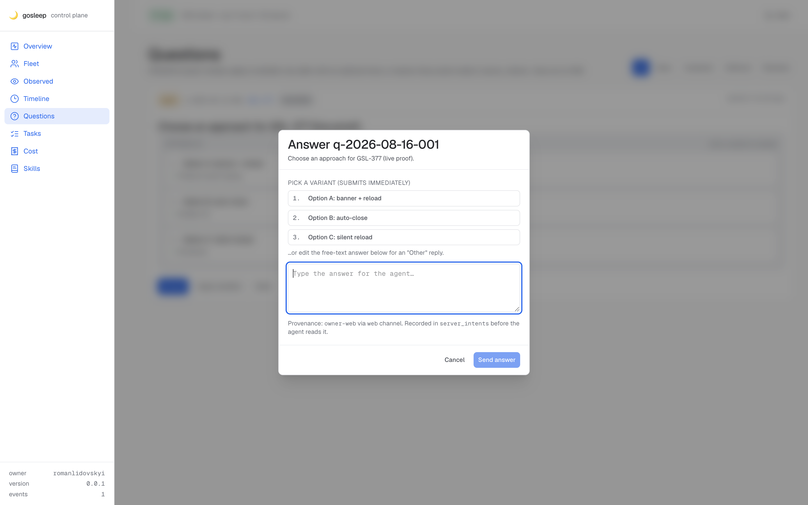
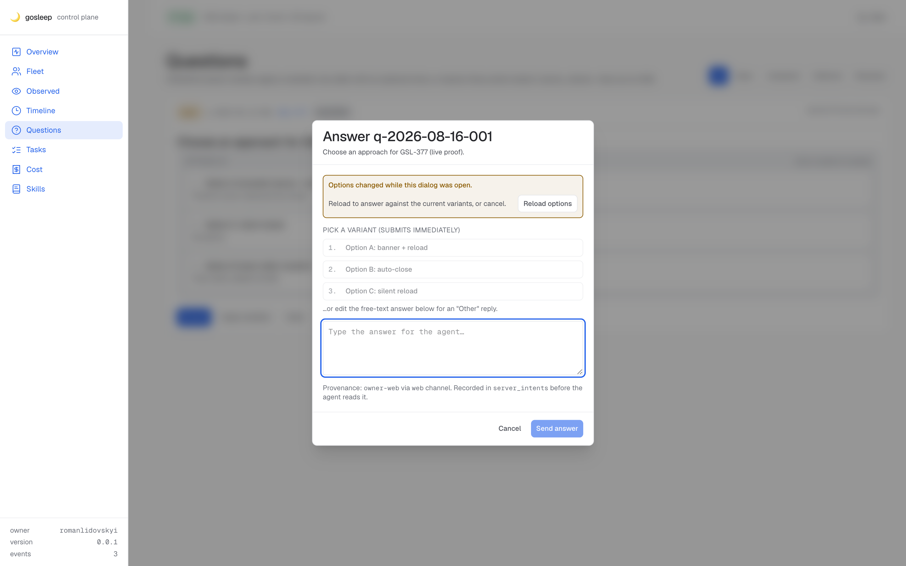
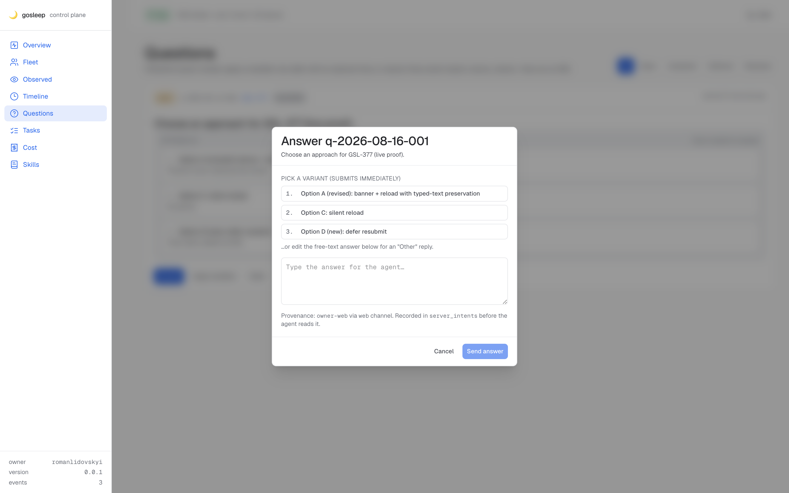

Fix verified end-to-end
SSE-driven option mutation while the Answer dialog is open triggers the stale banner, disables the submit paths, and Reload restores fresh options — hermetic scratch core on 127.0.0.1:7356, headless Chrome on CDP :9256, decoy DB + lab tree under .artifacts/gsl377-proof/. No real user data touched.
1 GSL-377 functionality Dialog opens with the seeded 3 options
Seeded a BLOCKER question q-2026-08-16-001 via POST /internal/questions/post with 3 options (A/B/C). Clicked the row's Answer button in the panel; the dialog opened with all three options visible as variant buttons.
The openedOptionsSig was captured at open time; the dialog has no stale banner (signature matches the live question).

2 GSL-377 functionality SSE mutation → banner fires, all submit paths disabled
Appended a new row for the same qid to lab/questions/queue.jsonl with 3 different options (removed B, renamed A, added D — drift on every axis). Appended a question.updated event to lab/events/2026-08-16.jsonl. The tail indexer folded both files; /questions now returns the new option shape.
The SSE broadcaster fanned out the event to the panel; the client invalidated the questions query; liveAnswerQuestion re-derived from fresh data; optionsSignature(liveOptions) no longer matches openedOptionsSig; answerOptionsStale flipped to true.
- Banner rendered with role="alert" — "Options changed while this dialog was open"
- All 3 per-variant buttons:
disabled - Top-level Send answer button:
disabled - Reload options button: rendered and enabled

3 GSL-377 functionality Reload → fresh options render, banner clears
Clicked the banner's Reload options button. reloadAnswerDialogFromLive rebuilt the dialog state from the live question, storing a fresh openedOptionsSig. The banner disappeared. The dialog now shows the three new options (A revised · C original · D new). Variant buttons are enabled again; the free-text answer input is preserved (empty in this run since no text had been typed).
- Banner removed from the DOM
- Three fresh variant buttons rendered with the new labels + aria-labels (GSL-376)
- Buttons enabled — submit paths available
